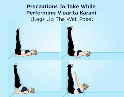

😴 Yoga for Tired Days
Recharge and gently relax your body with calming yoga poses.

Legs Up the Wall (Viparita Karani)
Reverses blood flow and relieves fatigue in legs and feet.

Child’s Pose (Balasana)
A gentle resting pose to calm the nervous system and restore energy.

Reclined Butterfly (Supta Baddha Konasana)
Deep hip opener that helps you fully relax and rest.

Corpse Pose (Savasana)
The ultimate restorative pose to deeply rest your body and mind.

Cat-Cow (Marjaryasana–Bitilasana)
Gentle spinal flow to bring mobility without fatigue.